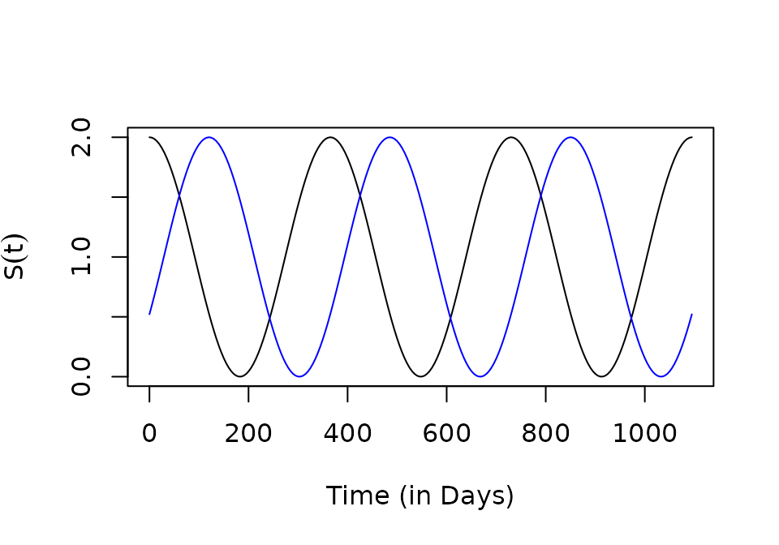

As part of the plug-and-play modular design for
ramp.xds, each dynamical component
includes a trivial model that has no variables. The outputs required by
other components are passed as a trace function. These
trace functions have three parts:
a mean value, or a scaling argument
a function that returns a F_seasonal signal, configured with a line in the appropriate options list,
F_season = function(t){...}a function that returns a F_trend, configured with a line in the appropriate options list,
F_trend = function(t){...}
The trivial modules each returns different values:
-
$\cal L$ - The trivial aquatic module is set up by
create_Lpar_trivial.The functionF_emerge()returnsLambda*F_season(t)*F_trend(t).To override the defaults,Loptsmust be a named list that sets the values of the elements:Lambda = c(...)is theF_season = function(t){...}F_trend = function(t){...}
-
$\cal MYZ$ - The trivial adult mosquito module is setup by
create_MYZpar_trivial.The values will return eitherF_fqZorF_eggs-
Both
F_fqZandF_eggsuse the same seasonality and trend functions:F_season = function(t){...}F_trend = function(t){...}
-
the function
F_fqZ()returnsf*q*Z*F_season(t)*F_trend(t). To configure,MYZoptsshould be a named list that sets the values of the elements:f = c(...)q = c(...)Z = c(...)
-
the function
F_eggs()returnseggs*F_season(t)*F_trend(t); to override the defaults,MYZoptsmust be a named list that sets the values of the elements:eggs = c(...)
-
-
$\cal X$ - The trivial module for human / host infection and immunity is set up by
create_Xpar_trivial.F_XcallsF_Hand then returnsH*kappa*F_season(t)*F_trend(t)F_His configured inxds_setupby passingHPop = ...-
To configure
F_X,Xoptsmust be a named list that sets the values of the elements. The values ofF_Xshould be in the intervalkappa = c(...)F_season = function(t){...}F_trend = function(t){...}
Emergence
The following adult mosquito model is forced by emergence and net infectiousness:
-
Loconfigures the adult mosquito emergence rate to rise initially, but then to decline with a F_seasonal signal:
Lo = list(F_season = function(t){1+sin(2*pi*t/365)},
F_trend = function(t){(1+t/250)*exp(-t/1000)},
Lambda =5)-
Xoconfigures the net infectiousness to rise to 80% over time.
rm = xds_setup(Xname = "trivial", Xopts = Xo, HPop=10,
Lname = "trivial", Lopts = Lo)
rm <- xds_solve(rm, 3650, dt=10)
xds_plot_M(rm)
xds_plot_Y(rm, add=T)
xds_plot_Z(rm, add=T)